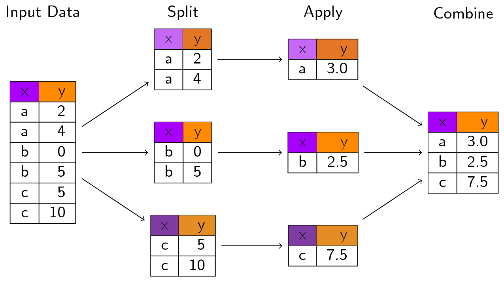
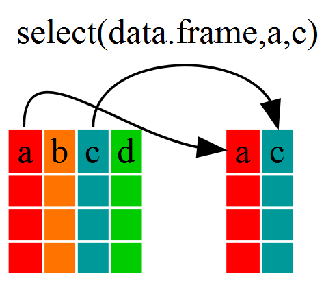
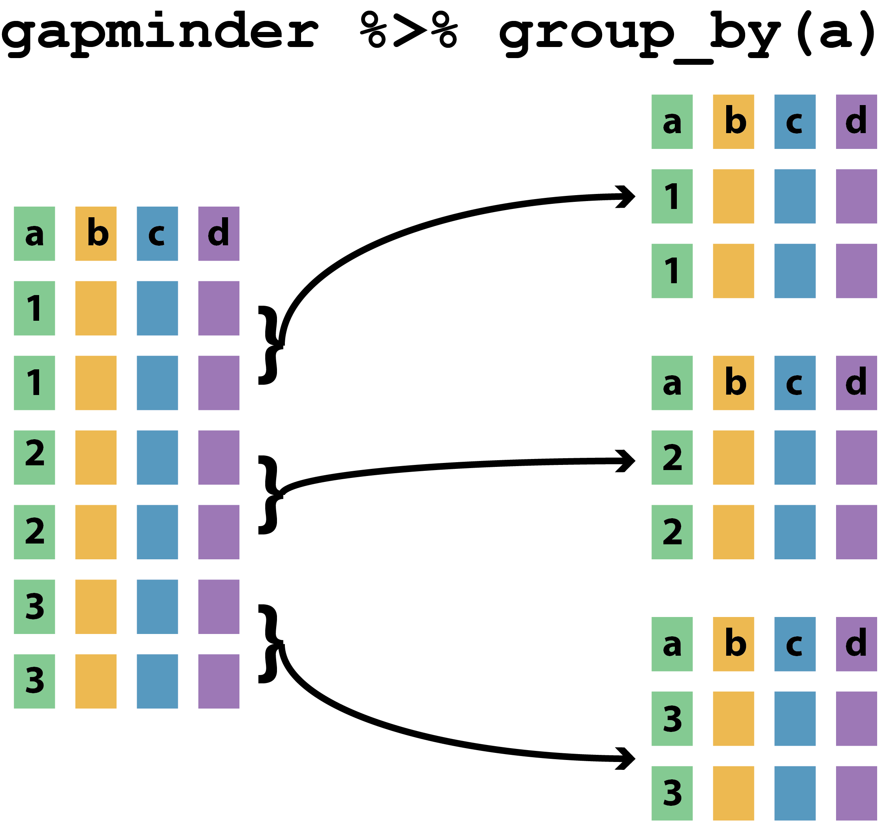
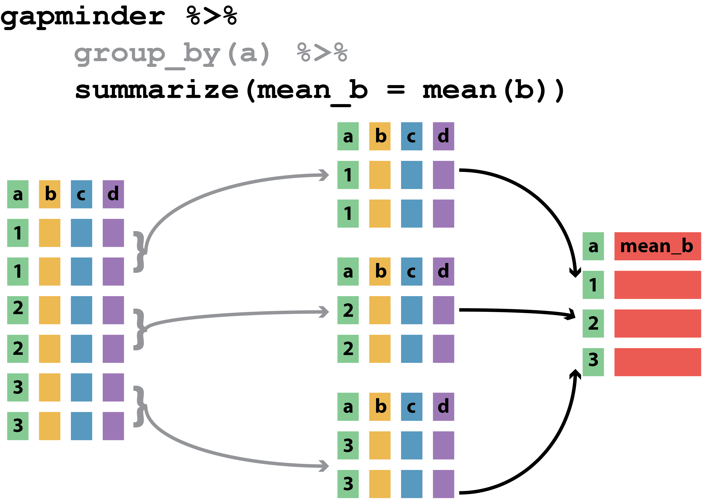
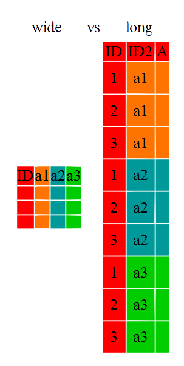
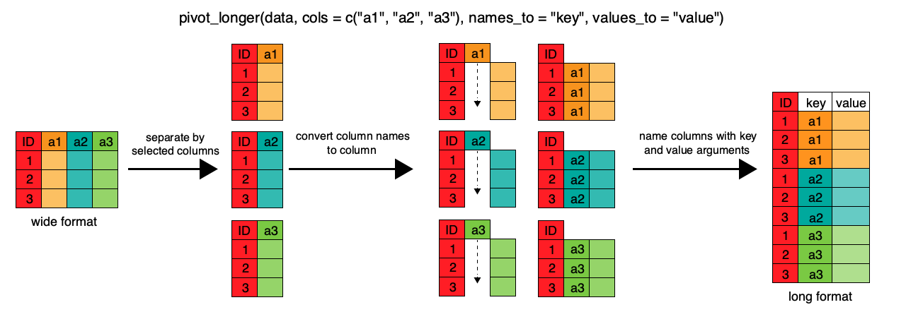
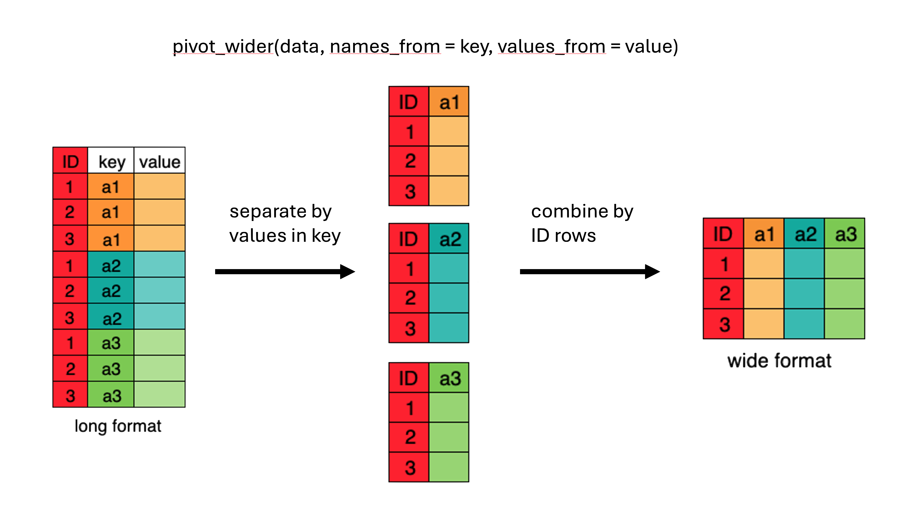

| John Smith | Jane Doe | Mary Johnson | |
|---|---|---|---|
| treatment.A | NA | 16 | 3 |
| treatment.B | 2 | 11 | 1 |
R?R?R?RR data types)R about the type and structure of an objectRR is mostly used for data analysisR has special types and structures to help you work with dataR is on tabular data (data frames)Interactive Demo
feline-data.csvTip
Understanding data types, their uses, and how they relate to your own data is key to successful analysis with R
What data types would you expect to see?
What examples of data types can you think of from your own experience?
Please write in the chat
Add your suggestions of data types at:
RData types in R are atomic
TRUE, FALSE3, 2L, 1234563.0, -23.45, pi"a", 'SWC', "This is not a string"(also complex and raw)
INTERACTIVE DEMO
Columns in dataframes
2.3 or 2.4) to the column of doubles changed its data type from double to character.Coercion: a preview
2.1) as a string (e.g. "2.1")"or") as a numberINTERACTIVE DEMO
RINTERACTIVE DEMO
INTERACTIVE DEMO
Type coercion
R interprets themINTERACTIVE DEMO
R will coerce vectors implicitly to make them atomicCoercion hierarchy
logical \(\rightarrow\) integer \(\rightarrow\) double \(\rightarrow\) complex \(\rightarrow\) character
as.<type_name>()Check your inputs
If there are formatting problems with your data, you might not have the type you expect when you import into R
INTERACTIVE DEMO
lists are like vectors, but can hold any combination of datatypeINTERACTIVE DEMO
Working with list data
elements in a list are denoted by [[]] and individual elements can also be named
cats data is a data.frameINTERACTIVE DEMO
What is a data frame?
A data frame is a special named list of vectors with the same length
INTERACTIVE DEMO
Where to find the data
Where to save the data
Save the data to the data subfolder (where you put feline-data.csv)
gapminderINTERACTIVE DEMO
str(gapminder) # structure of the data.frame
typeof(gapminder$year) # data type of a column
length(gapminder) # length of the data.frame
nrow(gapminder) # number of rows in data.frame
ncol(gapminder) # number of columns in data.frame
dim(gapminder) # number of rows and columns in data.frame
colnames(gapminder) # column names from data.frame
head(gapminder) # first few rows of dataframe
summary(gapminder) # summary of data in data.frame columnsdplyrdata.frames with the six verbs of dplyr
Note
select()filter()group_by()summarize()mutate()%>% (pipe)dplyr?dplyr is another package in the TidyverseTip
Avoiding repetition (though automation) makes code

select()
INTERACTIVE DEMO
filter()filter() selects rows on the basis of some condition
INTERACTIVE DEMO
Challenge
Can you write a single line (which may span multiple lines in your script by including pipes) to produce a dataframe from gapminder containing:
life expectancy, country, and year data
only for African nations
How many rows does the dataframe have?
group_by()INTERACTIVE DEMO

summarize()INTERACTIVE DEMO

Challenge
gapminder data?count() and n()Two useful functions related to summarize()
count()/tally(): a function that reports a table of counts by groupn(): a function used within summarize(), filter() or mutate() to represent count by groupINTERACTIVE DEMO
mutate()Tip
mutate() is a function allowing creation of new variables
INTERACTIVE DEMO
# Calculate GDP in $billion
gdp_bill <- gapminder %>%
mutate(gdp_billion = gdpPercap * pop / 10^9)
# Calculate total/sd of GDP by continent and year
gdp_bycontinents_byyear <- gapminder %>%
mutate(gdp_billion=gdpPercap*pop/10^9) %>%
group_by(continent,year) %>%
summarize(mean_gdpPercap=mean(gdpPercap),
sd_gdpPercap=sd(gdpPercap),
mean_gdp_billion=mean(gdp_billion),
sd_gdp_billion=sd(gdp_billion))ifelse()Tip
ifelse() allows us to restrict apply filtering when we use mutate()
ifelse([CONDITION], [VALUE IF TRUE], [VALUE IF FALSE])INTERACTIVE DEMO
“Tidy datasets are all alike, but every messy dataset is messy in its own way”
Data Cleaning is not just a first step
Principles of Tidy Data provide a standard way to organise data values within a dataset
What’s wrong with this data?
| John Smith | Jane Doe | Mary Johnson | |
|---|---|---|---|
| treatment.A | NA | 16 | 3 |
| treatment.B | 2 | 11 | 1 |
Is this better?
| treatment.A | treatment.B | |
|---|---|---|
| John Smith | NA | 2 |
| Jane Doe | 16 | 11 |
| Mary Johnson | 3 | 1 |
We need to talk about data semantics
A dataset is a collection of VALUES
| John Smith | Jane Doe | Mary Johnson | |
|---|---|---|---|
| treatment.A | NA | 16 | 3 |
| treatment.B | 2 | 11 | 1 |
Each value belongs to a variable and an observation
In the table below, what are the rows and columns?
| John Smith | Jane Doe | Mary Johnson | |
|---|---|---|---|
| treatment.A | NA | 16 | 3 |
| treatment.B | 2 | 11 | 1 |
Note
USE CHALLENGE SECTION ON ETHERPAD
The dataset contains 18 values
There are three variables and six observations
VARIABLES
NA, 16, 3, 2, 11, 1)Important
Each OBSERVATION includes all three variables
This is the dataset in tidy form
(aka long form)
| name | treatment | result |
|---|---|---|
| John Smith | a | NA |
| Jane Doe | a | 16 |
| Mary Johnson | a | 3 |
| John Smith | b | 2 |
| Jane Doe | b | 11 |
| Mary Johnson | b | 1 |
Tidy data is a standard way of structuring a dataset
R (supports vectorisation)Caution
INTERACTIVE DEMO

Many R functions are designed to expect long data
gapminder Wide DatasetINTERACTIVE DEMO

INTERACTIVE DEMO
separate()Tip
separate() allows us to split the contents of one column into several columns
separate([COLUMN], into=[NEW_COLUMN_NAMES], sep=[SEPARATOR])INTERACTIVE DEMO

INTERACTIVE DEMO
Challenge
Using the gap_long dataset, calculate the mean life expectancy, population, and GDP per capita for each continent.
Hint: use the group_by() and summarize() functions we learned in the dplyr episode. ```